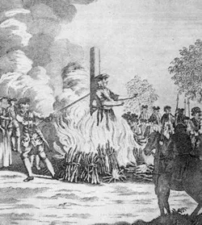

The Eighth Amendment of the Constitution of the United States
Bail shall not be required, nor excessive fines imposed, nor cruel and unusual punishments inflicted.

Background
The eighth amendment provides detainees with the opportunity to await
trial at home rather than in jail, the original fathers of the constitution did not want to be treated like they were
still in England. So, they developed an amendment to protect them from those very fears, of excessive bail, cruel and unusual punishment.
Those that have committed crimes sometimes suffered a lot of indignities when it came to being punished,
cruelties such as food deprivation, sleep deprivation, torture and other cruel punishments suffered while in England.
To this day people are still supposed to be protected from cruel and unusual punishment but they are not at times.
Some call solitary confinement cruel and unusual.
The 8th amendment states, "Excessive bail shall not be required, nor excessive fines imposed, nor cruel and unusual punishments inflicted.”
How bail is determined
So how is bail determined? Bail is supposed to be equal to the crime,
but other contributing factors include if the person is a flight risk, or they have the means to bail themselves out of jail.
But all to often those without the means cannot bail themselves out of prison, so they are stuck behind
bars awaiting trails that may take months or even years to arrive. Its hard for anyone to discuss bail and what is the appropriate amounts or really
what is cruel and unusual punishment for those that have committed crimes, and all of this is
based on the constitution that provides no significant details or guidelines to help those that it is supposed to help.
The guidelines are left up to the courts to determine and that can be very problematic as we have all seen.
When the system fails
Kalief Browder showed how the justice system is not always equipped to handle every situation,
his bail was only $1,000 dollars but his family was unable to afford that amount and
he spent 1,000 days in jail and over 750 days in solitary confinement.
When a person is detained for a crime that person can put up bail money to free themselves, the bail money is not kept by the courts.
It is only used to ensure that individual returns to court for trial. Once the trial is over the money is then returned to that individual.
Due process cannot be violated on any individual and that is why fines cannot be excessive without a trial. Cruel and unusual punishment will be
focused on the death penalty and the punishments handed out to those that have committed crimes. So, the eighth amendment
is a protection for those that have been accused of committing crimes and to ensure they are treated fairly.
Closing
|